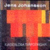
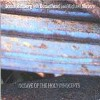

strange music page
overseas * * * jens johansson
#Jens Johanssonです。といっても知らない人には何の事か全然わからないと思いますので、ちょっとだけ解説。
北欧メタルのはしりと言ってもいいようなSilver Mountainのキーボーディストとして華々しくデビューした人で、その後はイングヴェイ(この人は説明要らないですよね)のバンドでしばらく活動、その後もDIOやSTRATOVARIUSなどで演奏して、メタル系のキーボード弾きとしてはそこそこ有名な人になっています。(現在もJohansson Brothersなどの様式美メタルでも活動してます)
ですが、この人がただのメタルの人では無いのを証明したのが、1990年のソロアルバム飛べない創造物です。どっか(確か某M誌)で書いてあったんですけど、「90年代のキーボードトリオのアルバムとしてはベスト」って。ジャズ/プログレ/ファンク/テクノをごちゃまぜにしたようなサウンド、このアルバムの疾走感は他のどんな音楽からも聴いた事の無いモノでした。
90年以降もメタルバンドにも参加しつつA.Holdsworthとのアルバムを出したり、2枚目のソロアルバム(ちょっとフュージョン寄りになっちゃって余り好きじゃないですけど)色々活動してます、個人的な好みから言うとJ.Hellborg(マハビシュヌに参加してたベースの人、この人周りも面白い音が多いです)が一緒に参加してるアルバムでハズレは無いです、今の所。
んで、Jonas Hellborgのアルバムもちょっとだけこっちに入れてます。
http://www.panix.com/~jens/
|
- Silver Mountain
- Johansson
- Jens Johansson
- Johansson,Johansson & Holdsworth
- Jonas Hellborg Group
- Jonas Hellborg with Buckethead and Michael Shrieve
- Giner Baker with Jens Johansson and Jonas Hellborg
- Anders Johansson
|
#北欧メタルです、様式美です。私は今はこの手のほとんど興味無いんですけど、昔買いました。
J.Johanssonの最初のレコードだと思います、結構テクニカルな(様式美ですけど)演奏が聴けます、曲も良いですし日本人ウケするメタルかなと思います。
J.Johanssonって基本的にこの手の音が根っこに有るみたいで、この後イングウェイのバンドとか、DIOとかストラトヴァリウス(北欧メタル)に参加してます。でも、ほとんど目だってなくて、というかいてもいなくても大差ない内容でした。んで、最近のJohansson名義の作品もとっても様式美メタルでした。
- 1789
- Aftermath
- Always
- Necrosexual Killer
- Destruction Song
- Vikings
- Looking for You
- Spring Maiden
- King of Sea
- Keep on, Keepin' on
- Jonas Hansson (guitars,vocals)
- Jens Johansson (keyboards)
- Anders Johansson (drums)
- Per Stadin (bass)
#えーとBURRN向けの....様式美メタルです。たまーに聴く分には。
日本向けボーナストラック
Samurai。あぁ。
- The Last Viking
- Burning Eyes
- Valhall Scuffle (instrumental)
- Fading Away
- Forest Song
- In The Mirror
- Samurai (Japanese bonus track)
- Close To You
- Carry Me
- Winter Battle
- Alone
- Jens Johansson (keyboards)
- Anders Johansson (drums)
- Goran Edman (vocals)
- Michael Romeo (guitars,bass)
PONY CANYON: PCCY-01340 (1999.2)
#これは高校の頃にJ.Johansson好きな女の子から借りました(ちなみに何故か一緒にR.WatersのAmused to Deathも借りた)、当時はメタル系のキーボード弾きの印象しか持ってなかったので、これを聴いて死ぬほど驚いた記憶があります。
様式美メタルのJ.Johanssonを期待してこれを買った人とかどう思うんでしょうね、内容はまぎれもないプログレです。しかも、様式美系じゃなくってJazz/Avant-garde系統の物凄く格好良いプログレです。ポリリズム,複数拍子など織り合わせてクールに展開していきます、A.Johansson(Jensの実兄)のリズムって機械的に聞こえてしまうんですけど、このアルバムでは逆に緊張感を持続するのに効果的に聞こえます。
あとJ.Hellborgなんですが(この人もとても面白い音楽をやっている人なんですが)この人無しにはこのアルバムも有り得なかったようです。このアルバムと同じメンバーで"e"というアルバムを作っています。J.Johansson関係では(自分にとって)このアルバムだけ群を抜いて好きなアルバムです。ほんとスゴイす、他に無い内容。

- A Mote in God's Eye (神の小さな過失)
- In Transit
- Megiddo
- Semaphores (手旗信号)
- Jens Johansson (keyboards)
- Anders Johansson (drums,programming)
- Jonas Hellborg (bass)
JIMCO RECORDS: JICK-89122 (1990 - original release DAY EIGHT MUSIC)
#HEPTAGON RECORDS（Jensの兄、Anders Johanssonが運営してるレコード会社）から1995にリリースされた、Jens Johanssonのピアノソロです。
とーぜんですが、他のアルバムみたいに派手なモノでは無いです、クラシカルな響きが強いですけど、少しジャズっぽい所とかも織り交ぜてじっくり聴くと色々面白いです。（3曲目かなりエマーソンっぽいです）
みょーな後味を残すピアノインスト、どーにもBGMにはならないです。Jens Johansson好きの人は探して買ってみて下さい。
- Dance of Chaos
- Dark Sikes
- Ghosts of The Yellow River
- Burning in Water
- South of No South
- Thirst
- Drowing in Flame
- Lullaby
- El Sou-Sou
- The Last Days of Peace
- Three Shadows
- Transparent Reality
- A Broken Thought
- The Mist of Reason
- Hot Water Music
- Women
- Coherent Dreams
HEPTAGON RECORDS: HECD-008 (1995)
#全部で78分近くあります。この新譜もソロ路線でプログレッシヴジャズフュージョンみたいな感じです。ハイテクで格好良いです。ただ今回は、Jonas Helborgがいないので、若干重量感が欠けるような気もします。
やっぱり、この人の弾くベースのフレーズって、機械的で(テクノっぽくは無い)とても面白いです。
- Hooded Strangers
- Phase Camouflage
- Zero Sum Game
- Acrostic Shibboleth
- Don't Mention the War
- Race Condition
- Crowd Tectonics
- Nystagmus
- Beautiful Lung Dogs
- Straffpolska fran Sudan
- Jens Johansson (keyboards)
- Anders Johansson (drums,percussions)
- Shawn Lane (guitars)
- Mike Stern (guitars)
PONY CANYON: PCCY-01215 (1998.2.18)
#Jonas Hellborg Group名義のアルバムですが、実際にはヨハンソン兄弟とのデュオのアルバムになっています。Jens Johanssonのソロ
"飛べない創造物"と同じメンバーですが、こちらのアルバムはJonas Hellborgが主導権を握っていてFUNK/JAZZ ROCK色が強いようです。Jensのテクニカルなソロが聴ける割合はこのアルバムが一番強いかも。
- Dog Bar-B-Q
- JB
- Vilnius
- Mouteadne
- Kenneth
- Moving
- Sovjet
produced by Jonas Hellborg
- Jonas Hellborg (bass)
- Jens Johansson (organ)
- Anders Johansson (drums)
MARQUEE/HERESIE: HER-010

- Rana and Fara
- Death that sleeps in them
- The past is a different country, I don't live there anymore
- Child King
- Kidogo
- Jonas Hellborg (bass)
- Backethead (acoustic guitar)
- Michael Shrieve (drums)
DAY EIGHT MUSIC: DEM-032 (1993)
#元クリームのG.Bakerのアルバムです、どっちかっていうとB.Laswell絡みの流れで作られたと思われるアルバムです、プロデュースはJ.Hellborgでリリースも彼のレーベルからです。(ちなみにJIMCOが倒産しちゃってるので、国内盤は廃盤と思います。残念)
内容は3人でのセッションからの録音みたいです、バタバタドラムにバキバキベースでもファンクっぽくなっていないのは、J.Johanssonのピアノのフレーズに依る所が大きいと思います。
似たような編成で比べると
J.Hellborg Group/"e"はJ.Hellborg主導のファンク。
J.Johansson/飛べない飛行物はJ.Johansson主体の構築系のサイバーフュージョン。このアルバムはやっぱりG.Baker主体のジャズセッションといった印象です。(2000.8.16)
- Rain and the Rhiroceros
- Worlds Within Worlds
- Open Secret
- The Great Festical of Destruction
- The Time of no Room
- The Sign
- Mirror of steel
- To Each his Darkness
- Ginger Baker (drums)
- Jonas Hellborg (bass)
- Jens Johansson (piano)
JIMCO RECORDS: JICK-89124 (1992 - original release DAY EIGHT MUSIC)